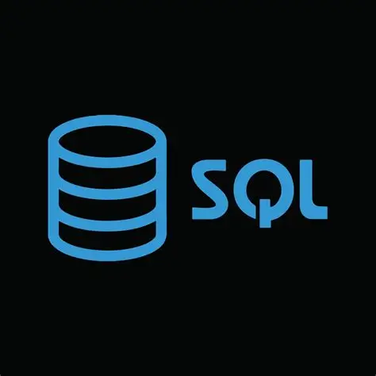

April 20, 2025
SQL
PROJECTS
My SQL projects demonstrate a strong command of data manipulation, querying, and optimization.
From building joins and subqueries to designing efficient database schemas and stored procedures, I've worked with real-world datasets to extract meaningful insights.
Whether it's cleaning messy data, generating reports, or automating workflows, these projects reflect my ability to think logically, write clean code, and solve problems with precision.

April 20, 2025
EXCEL
PROJECTS
My Excel projects showcase a deep proficiency in data analysis, visualization, and automation.
From crafting dynamic dashboards with pivot tables and slicers to writing complex formulas and leveraging Power Query for data transformation, I've used Excel to turn raw information into actionable insights.
Whether it's cleaning and structuring messy datasets, building financial models, or automating repetitive tasks with VBA, these projects highlight my attention to detail, analytical thinking, and ability to deliver polished, user-friendly solutions.
 April 20, 2025
April 20, 2025
PYTHON
PROJECTS
My Python projects highlight a strong grasp of data analysis and visualization using core libraries like Pandas, NumPy, Matplotlib, and Seaborn.
I've worked with real-world datasets to clean, transform, and explore data efficiently—leveraging Pandas for structured manipulation and NumPy for numerical operations.
Through Matplotlib and Seaborn, I've created compelling visualizations that reveal trends, patterns, and outliers with clarity.
These projects reflect my ability to write clean, purposeful code and extract meaningful insights through thoughtful analysis and presentation.